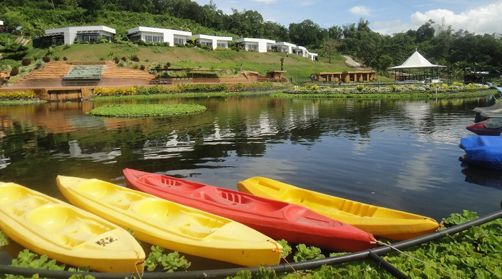
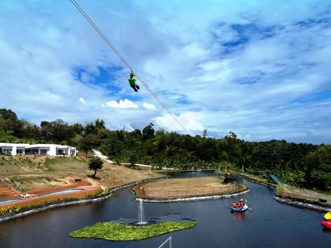

Our Profile
Who We Are
GarinFarm is a premier agri-tourism destination in San Joaquin, Iloilo. We are dedicated to providing a holistic experience that combines farming, leisure, and spiritual reflection.
Our Mission
To offer a sanctuary where visitors can reconnect with nature, appreciate agriculture, and find peace through our unique spiritual installations.
Key Features
-

The Journey to Heaven (Religious Monument) - A 456-step pilgrimage hill featuring biblical scenes leading to a white cross and a "heaven" installation.
-

Animal Sanctuary & Farm - Home to ducks, rabbits, horses, goats, and other farm animals in a zero-waste environment.
-

Swimming Pool & Water Activities - A wide pool for adults and children, plus kayaking and fishing on a man-made lagoon.
-

Zipline and Horseback Riding - Adventure activities including a two-way zipline and horseback riding trails.